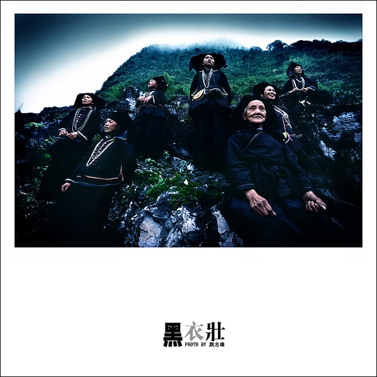
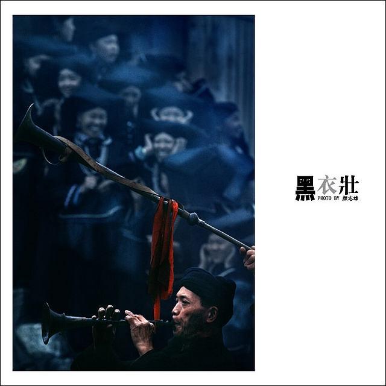
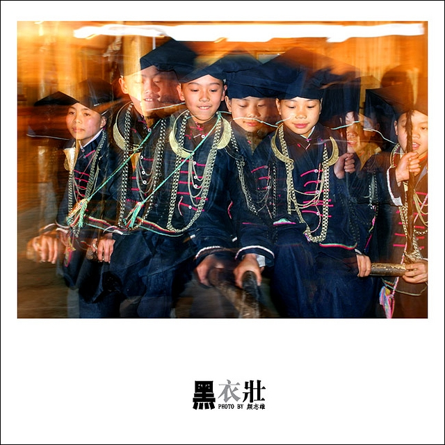
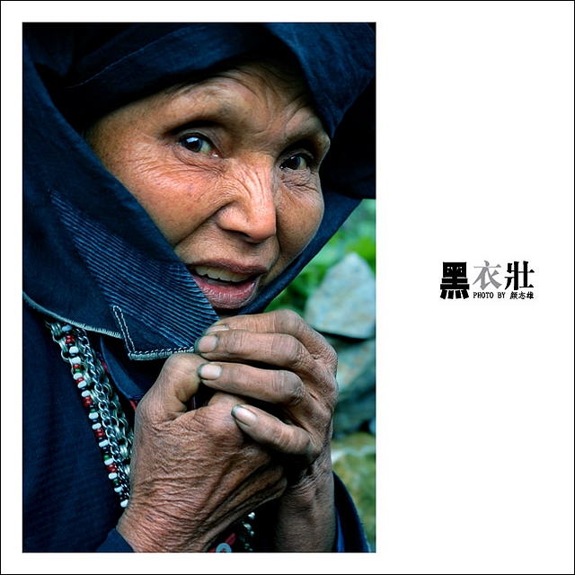
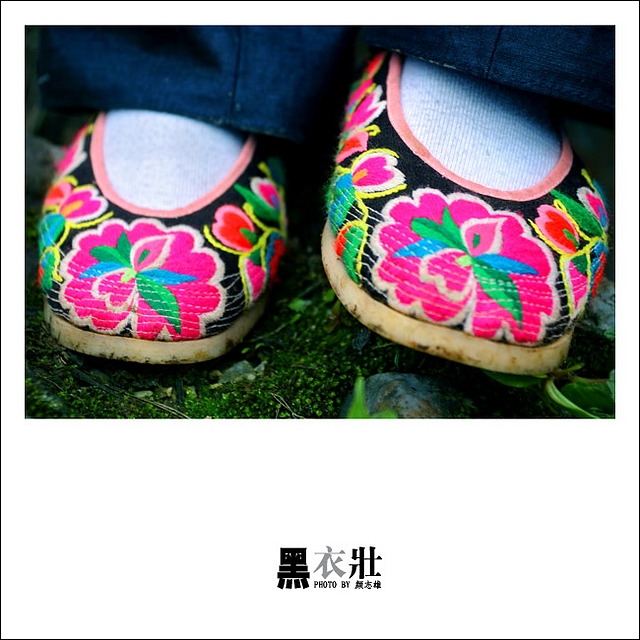
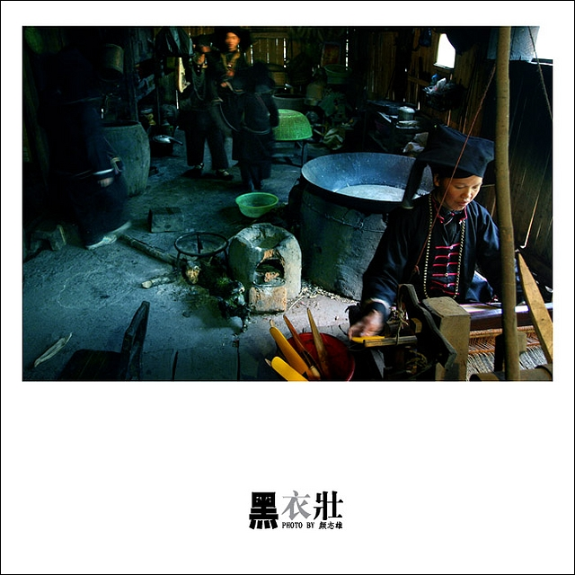
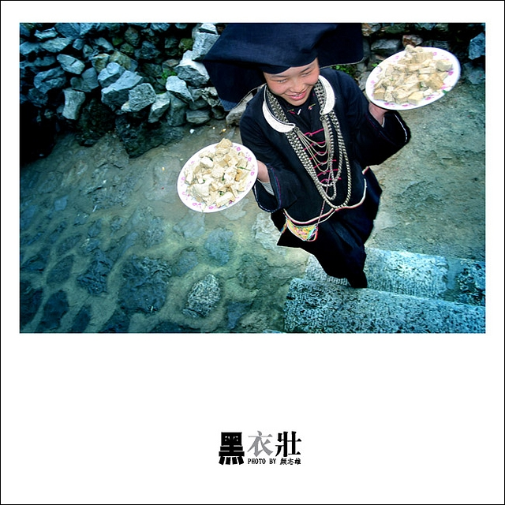
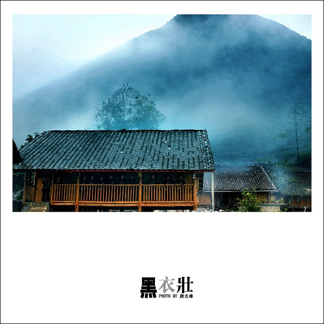
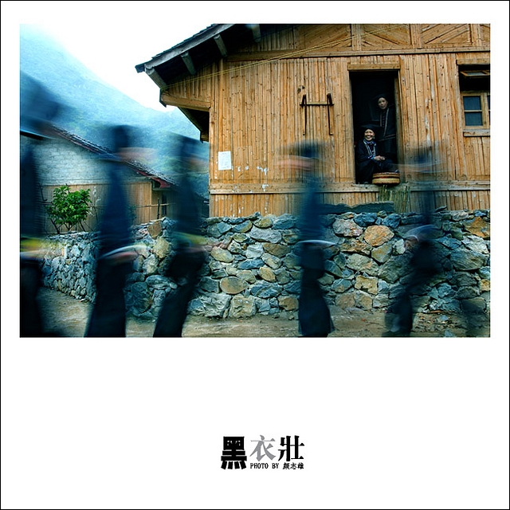
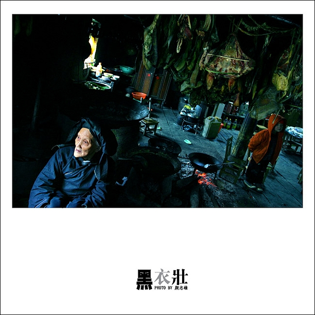

中国西南边陲的广西那坡县与越南毗邻，该县境内的壮族按自称的称谓和各自的语言划分有12个族群。其中，自称为“敏”（亦称布壮）的族群，就是人称黑衣壮的一个族群。人类学家称黑衣壮为壮族的“活化石”。
黑衣壮至今仍然保留着穿黑色的传统，同时，穿戴上的实用性与款式大方朴素美观有机的结合完善了黑衣壮服饰文化的内涵。黑衣壮男人穿的是前盖大襟上衣，以宽裤脚、大裤头的裤子相搭配，头上还缠着圈成数圈的黑布头巾，腰间系一条红布或红绸的带子，以示驱鬼赶邪，兼有显示男人威武神勇气概之意。妇女都喜欢穿右盖大襟和葫芦状矮脚圆领的紧身短式上衣，下身以宽裤脚、大裤头的裤子相搭配，腰系黑布做的大围裙，头戴黑布大头巾
其围裙既宽且长，围裙不仅能用来装饰，如可将裙角往上打个三角形系在前腰间，以示潇洒美丽；还可以把裙底翻上来当包袱用。在劳动时，更可以作斗形的袋子，装些菜豆、杂粮等。妇女所戴的头巾都是她们自己织染的长条黑布，戴时，先围绕在头上一圈，然后翻折摆布成大菱角形的样子，罩在头上，再把头巾两头分别垂挂在双肩上，不仅看上去朴素美观，还可以当作帽子遮荫用。
她们的衣边、袖口、裙边和头巾的四边都用红布或黄布剪成小条捆镶上去，有的则用红、黄、蓝色丝线绣成波浪形的线条，使黑中托透出红、黄、蓝色的细线段，清雅明亮，色彩协调中更凸显层次的美和玲珑的美。黑衣壮妇女佩带的银项圈，两端都制成鱼形状，有如双鱼对吻。
黑衣壮自种、自织、自染、自穿，是地地道道的民族文化。家家都有纺织机和用石头凿成的染缸，织出的布要用蓝靛浸染、漂洗数十次，再用牛胶、猪血煮染、漂洗后晾干成黑布，最后还要经过浆衣、用棒槌捶打多次，才能制出质地结实、平整、黑亮的成品布。这一过程充满了黑衣壮特有的生活气息和传统习俗的诗情画意。蓝靛染织文化的氛围很浓。黑衣壮的蓝靛染织工艺，不但是黑衣壮的文化遗产，同时也是中华民族甚至是全人类的文化遗产。
黑衣壮过着二月二、三月三、五月五、六月六等传统节日。在“风流节”等传统节日中，情窦初开的青年男女来到百年老树下或大草坪上相会，红美带是黑衣壮族青年男女重要的定情物和吉祥物，把写有自己生辰八字的红美带抛入大簸箕中，经搅和后各人自己抽出一个，得出的红美带上写有的名字就是你的梦中情人。青年男女通过“红线传情”对唱情歌、互赠信物而情定终身。歌声里寄寓了黑衣壮的生活理想，也流淌着他们优秀灿烂、色彩斑斓的历史文化，体现着他们坚韧不拔、乐观好客、吃苦耐劳、简朴勤勉的优秀品质、传诵着他们独特的民族精神……


